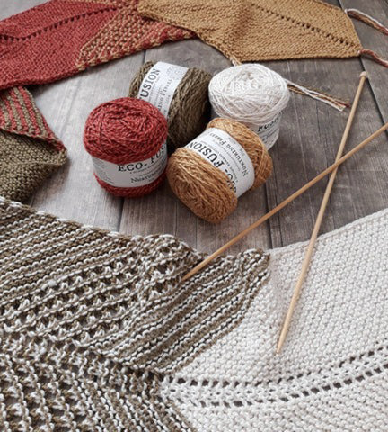
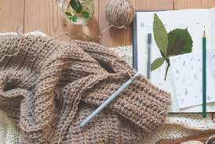
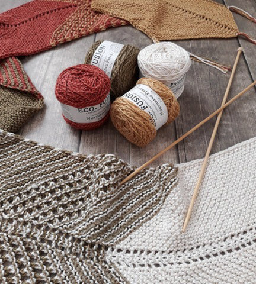
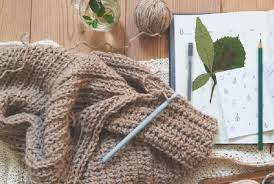
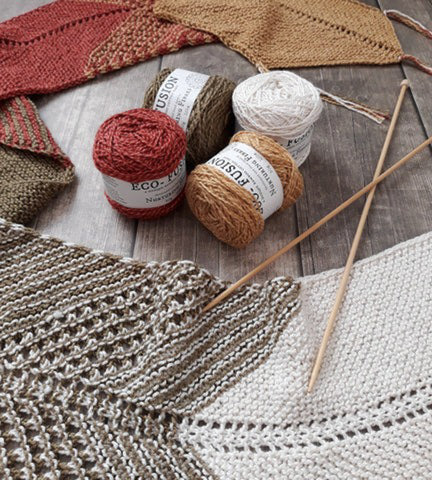
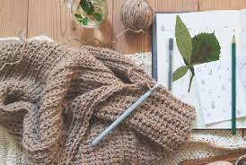

El crochet es una técnica para tejer que utiliza una única aguja, y con el se pueden tejer desde prendas de bebé con lana o algodón fino hasta prendas para más mayores, con lana o algodón más gordo, o cosas de decoración para casa como posavasos, mantas o alfombras.


La palabra croché viene del francés antiguo crochet, un diminutivo de
croche, que viene a su vez del alemán croc, que significa «gancho»,
haciendo referencia a la aguja que se utiliza en esta técnica.
Se dice que el crochet o ganchillo tiene su origen en las prácticas
tradicionales árabes, sudamericanas o chinas, en antiguas culturas que,
en lugar del ganchillo, utilizaban el dedo índice flexionado para tejer,
y que se empezó a utilizar en Europa durante el siglo XVI. Hoy en día
todavía existen algunas técnicas en las que se teje con las manos,
sobretodo cuando se usan lanas muy gruesas para, por ejemplo, tejer alfombras.
Crochet
31-Marzo-2023 | Carolina Medrano Guevara